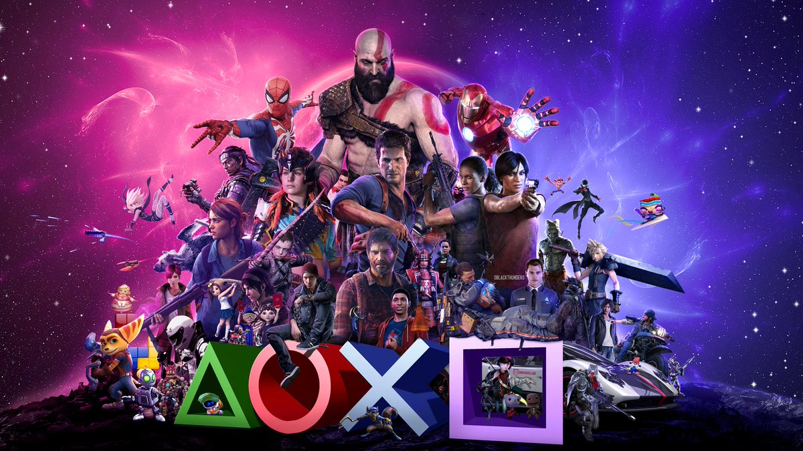
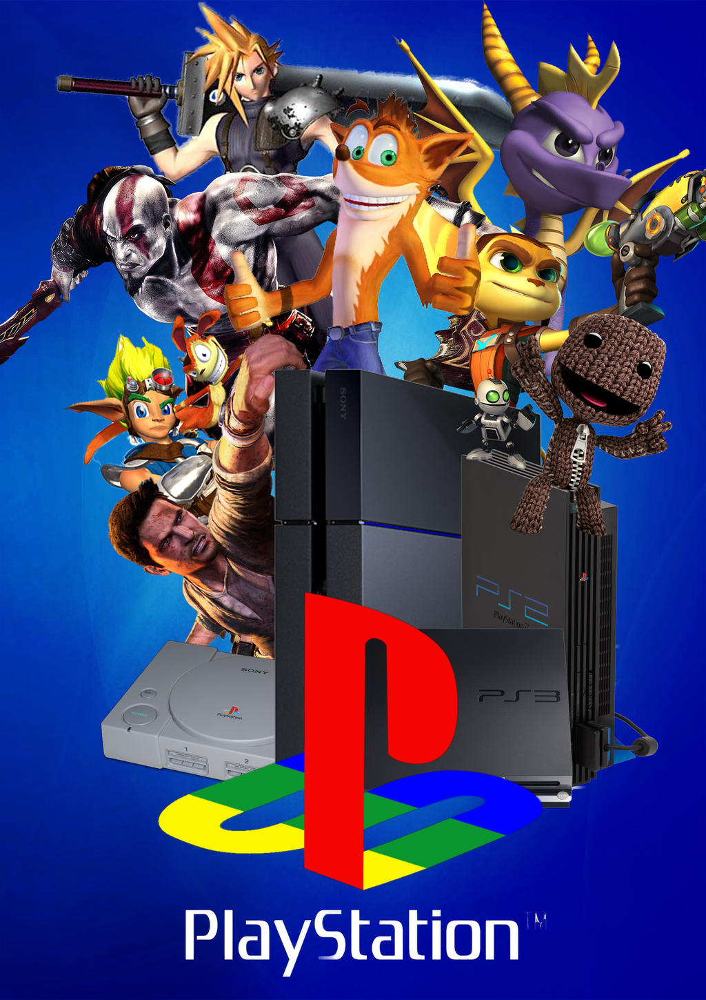
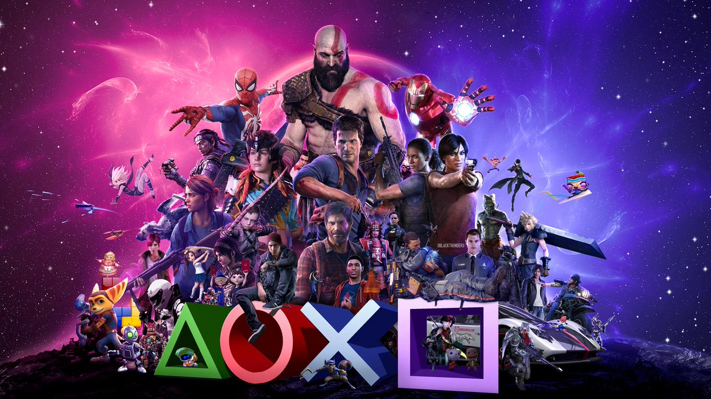
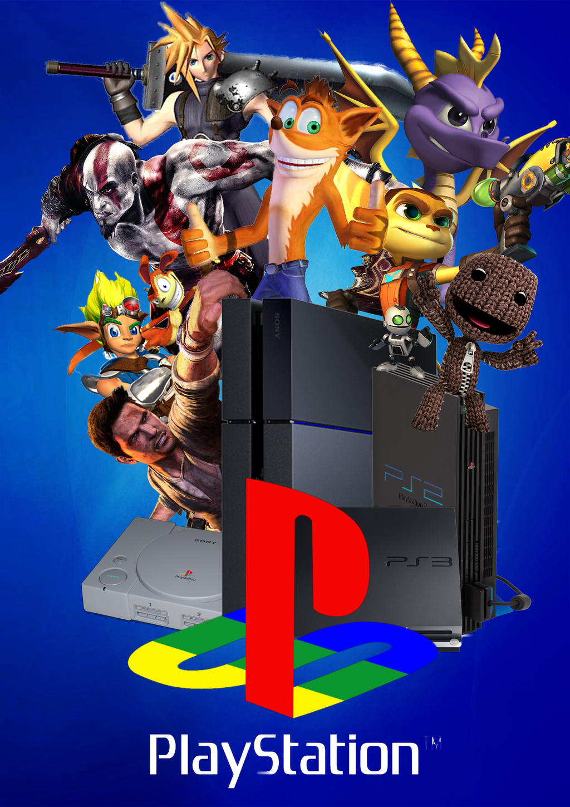

Sony is one of the most recognizable names in the industry of gaming console. Sony PlayStation has been in our homes for more than 20 years. It revolutionized the industry. Initially, Sony tried to work with Nintendo instead of bringing its own console in the market by Nintendo wanted full licensing rights. .
 



The PlayStation is a home video game console developed and marketed by Sony Computer Entertainment. It was first released on 3 December 1994 in Japan, 9 September 1995 in North America, 29 September 1995 in Europe, and 15 November 1995 in Australia, and was the first of the PlayStation line of video game consoles
PlayStation was the brainchild of Ken Kutaragi, a Sony executive who managed one of the company's hardware engineering divisions and was later dubbed "The Father of the PlayStation"..
Truly a piece of gaming history, King's Field is the first game ever released by FromSoftware, the incredible company behind the Souls games. You can really see their design philosophy at work in King's Field. The game was one of the first-ever first-person fully 3D RPGs..